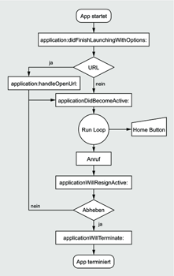
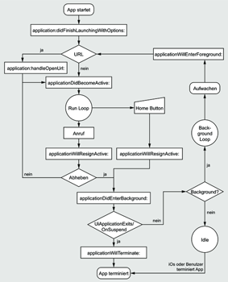

Zum Online-Shop
Zum Online-Shop
1.4 Besonderheiten der Programmierung
Die technischen Möglichkeiten des iPhone bieten Ihnen viele Möglichkeiten, innovative Applikationen zu erstellen. Allerdings bekommen Sie dabei auch nichts geschenkt. Die Vielzahl der Möglichkeiten auf einem so kompakten Gerät stellt besondere Anforderungen an effiziente und ressourcenschonende Programmierung. Im Gegensatz zu Applikationen, die auf Desktop- und Server-Systemen laufen, sind die Ressourcen, insbesondere die Stromversorgung und der Speicher, auf dem iPhone begrenzt. Dies stellt für Einsteiger in der Regel kein Problem dar, sie können sich von Anfang an eine ressourcenschonende Art der Programmierung aneignen. Anders sieht es allerdings häufig mit Programmierern aus, die vorher Desktop-Applikationen programmiert haben. Je billiger leistungsfähige CPUs, Speicher und Festplatten werden, desto weniger wird die Tugend der schlanken Programmierung gepflegt und geschätzt. War in der Anfangszeit der Desktop-PCs der verfügbare Speicher noch auf 640 KB beschränkt (auf x86-PCs), haben aktuelle Desktop-PCs Hauptspeichergrößen im Gigabyte-Bereich. Einen Programmierer auf nicht benutzte Variablen oder unnötige Iterationen im Code aufmerksam zu machen, ist in Zeiten von Quad-Core-CPUs und nahezu unbegrenztem Speicher ein ziemlich aussichtsloses Unterfangen.
Anders sieht es auf dem iPhone aus. In Bezug auf Ressourcen sorglose Programmierer machen beim Einstieg in die iPhone-Programmierung die schmerzliche Erfahrung, dass die Ressourcen des iPhone im Vergleich zu aktuellen Desktop- oder Server-Systemen sehr begrenzt sind. Sowohl in Bezug auf Speicherplatz als auch auf die Verwendung effizienter Algorithmen stellt das iPhone hohe Anforderungen an den Programmierer. Ein schlecht programmierter, ineffizienter Such-Algorithmus mag auf einem Desktop-PC nicht negativ auffallen, da genügend Hauptspeicher vorhanden ist und die fehlende Optimierung durch pure Rechenleistung ausgeglichen wird. Auf dem iPhone geht einer schlecht programmierten Applikation schnell der Speicher aus, und eine erhöhte Rechenleistung erfordert einen erhöhten Stromverbrauch, was bei einem tragbaren Gerät wie dem iPhone ein wichtiger Faktor ist.
Aber keine Sorge, Sie müssen nicht gleich jede geschriebene Anweisung auf die Goldwaage legen und immer nach noch besseren Lösungen suchen. Sie sollten vielmehr einen pragmatischen Ansatz wählen und Ihr Programm zuerst so schreiben, dass es funktioniert und es danach optimieren. Instruments bietet Ihnen eine Menge Möglichkeiten, die Schwachstellen in Ihrem Code zu entdecken.
1.4.1 Speicher
Einem Programm steht unter iOS nicht mehr als der physische Speicher zur Verfügung. Wenn bei einer Applikation der Speicher knapp wird, sendet iOS zunächst Speicherwarnungen und beendet im äußersten Fall die App. Dieses Verhalten kommt bei Desktop- und Serverbetriebssystemen extrem selten vor. Dort kann eine Applikation so viel Speicher belegen, wie Hauptspeicher und Swap-Platz hergeben. Die vollständige Belegung führt zwar auch dort häufig zu einem Absturz der Applikation, allerdings ist die Menge an verfügbarem Speicher um ein Vielfaches größer als beim iPhone.
Über spezielle Delegate-Methoden und Benachrichtigungen informiert das iOS darüber, dass nur noch wenig Speicher zur Verfügung steht. Eine Applikation sollte diese Informationen entgegennehmen und möglichst viel nicht benötigten Speicher freigeben.
Speicher sollte im Programmverlauf stets so früh wie möglich freigegeben werden. Mehr zum Speichermanagement enthält Kapitel 2. Bei der Arbeit mit Dateien ist es angezeigt, diese über Memory Mapping anzusprechen und nicht komplett in den Arbeitsspeicher einzulesen. Dies gilt insbesondere für Dateien unbekannter Herkunft, wie z. B. RSS-Feeds. Sind solche Dateien zu groß, wird der Speicher knapp, und über ausreichend große Dateien kann das iPhone lahmgelegt werden – ein effizienter Denial-of-Service-Angriff.
Speichersparende Programmierung umfasst nicht nur den bedachten Umgang mit Variablen und externen Datenquellen, sondern beinhaltet auch ein entsprechendes Design der Benutzeroberfläche. Ein gutes Beispiel dafür ist das Mail-Programm des iPhone. Dieses zeigt – je nach Konfiguration – nur die Kopfzeilen der erhaltenen E-Mails an. Es belegt dabei natürlich auch nur den Speicherplatz für die Anzeige der Kopfzeilen. Erst beim Auswählen einer E-Mail wird die entsprechende Mail in den Speicher geladen und verarbeitet. Beim Schließen dieser E?Mail gibt Mail den entsprechenden Speicher wieder frei. Das Speichermanagement hat beim iPhone also einen großen Stellenwert.
Dazu gehört auch, bei fertigen Applikationen nachzuprüfen, ob Speicherlecks vorhanden sind. Xcode (siehe Abschnitt 1.2) stellt dafür entsprechende Werkzeuge zur Verfügung. Fehlerhafter Umgang mit Speicher kann darüber hinaus zu instabilen Programmen führen.
1.4.2 Akkulaufzeit
Neben dem stark beschränkten Speicher ist die Stromversorgung die zweite Schwachstelle bei mobilen Geräten, so auch beim iPhone. Insbesondere bei voll aktivierten Netzwerkfunktionen (UMTS, WLAN, Bluetooth und Push-Dienste) hält der Akku nur kurze Zeit. Daher gilt für den Programmierer auch hier, dass das aktive Schonen der vorhandenen Ressourcen sehr wichtig ist. Der größte Stromfresser beim iPhone ist die Datenübertragung. Daraus ergibt sich, dass eine Applikation nur dann Daten übertragen sollte, wenn es wirklich notwendig ist. Ein RSS-Reader beispielsweise sollte die Verbindung ins Internet nur einmal aufbauen, um die RSS-Feeds zu laden. Danach ist keine Netzwerkverbindung mehr notwendig, wenn er die Feed-Inhalte zwischenspeichert. Dasselbe gilt für das Mail-Programm des iOS. Beim Start lädt das Programm die Header der ungelesenen E-Mails und geht danach in den Offline-Modus. Erst beim Anwählen einer E?Mail zum Lesen baut es eine Verbindung zum E-Mail-Server auf und lädt die E?Mail herunter. Es ist für die Nutzer übrigens auch sehr angenehm, wenn sie auf die bereits geladenen Inhalte auch ohne aktive Internetverbindung zugreifen können. Gerade beim iPod touch und dem iPad ohne UMTS können Sie nicht immer eine aktive Onlineverbindung voraussetzen.
Auch sollte möglichst vermieden werden, UMTS-Verbindungen intensiv zu nutzen. Das Verwenden der UMTS-Funktionalität des iOS ist ein großer Stromfresser. Viele Benutzer haben auch gar kein UMTS aktiviert, da zum täglichen Gebrauch, also um E-Mails und Nachrichten zu lesen, EDGE vollkommen ausreichend ist und die Akkulaufzeit des iPhone sich vergrößert, wenn UMTS deaktiviert ist. Wie bei der Verwendung des Speichers gilt daher auch bei den Netzwerkfunktionen: So sparsam wie möglich einsetzen. Ein zu starker Datenaustausch über mobile Verbindungen kann übrigens auch zu einer Ablehnung der App im App-Store führen.
| Datenverbindungen und der Freigabeprozess |
|
Apple gibt Programme für den App-Store nicht frei, wenn sie mehr als 1 MB pro Minute über das Mobilfunknetz laden. Sie können das relativ einfach nachprüfen, indem Sie in den iOS-Einstellungen unter Allgemein · Benutzung auf Statistiken zurücksetzen drücken. Starten Sie danach Ihre App auf dem Gerät, und benutzen Sie sie 5 Minuten lang. In den Einstellungen können Sie dann unter dem Punkt Empfangen sehen, welche Datenmenge Ihre App geladen hat. Dieser Wert darf nicht größer als 5 MB sein. |
|
Diese Datenmenge erreicht eine App aber meistens nur durch den Download von Multimedia-Inhalten. Achten Sie also bei Bildern darauf, dass sie genau die Ausmaße der jeweiligen Anzeige haben. Für Fotos sollten Sie das Format JPG verwenden, das die besten Komprimierungsraten hat. Für Videos unterstützt iOS ein bandbreiten-abhängiges Format namens M3U, bei dem Sie eine Videodatei in mehreren Bitraten und somit Datengrößen bereitstellen können. Apple stellt zu diesem Thema ein Dokument mit dem Titel HTTP Live Streaming Overview[8](http://developer.apple.com/library/ios/#documentation/NetworkingInternet/Conceptual/StreamingMediaGuide/Introduction/Introduction.html) zur Verfügung. |
1.4.3 Benutzerschnittstelle
Die Benutzerschnittstelle des iPhone unterscheidet sich fundamental von der eines herkömmlichen PC. Es gibt keine Maus und keine Tastatur, stattdessen interagiert der Benutzer mit dem Multitouch-Display und gegebenenfalls über Gerätebewegungen. Daraus ergeben sich ganz neue Anforderungen an den Programmierer, denn zum einen muss er die Besonderheiten dieser Benutzerschnittstellen beachten und nutzen, zum anderen muss er sich bei der Gestaltung einer Applikation an ein völlig neues Benutzerverhalten gewöhnen.
Die Philosophie hinter iOS ist, dass es für jeden Anwendungsfall eine eigene Applikation gibt. Dies macht bereits Apple vor: Mail, Kalender, iPod, Safari, Wetter und Aktien sind alles getrennte Applikationen und keine Eier legende Wollmilchsäue. Eine Applikation sollte für einen einzigen bestimmten Anwendungszweck konzipiert und implementiert sein. Bis zur Version 4 bot das iOS auch kein Multitasking – von den Systemdiensten, dem Telefon und der iPod-Funktionalität abgesehen. Multitasking im Sinne gleichzeitig ablaufender Programme, zwischen denen der Anwender hin- und herschalten kann, war nicht vorgesehen. Bei der Erstellung von Applikationen ist dieser Umstand daher abhängig von der Zielplattform zu beachten. Auf Geräten mit den Vorgängerversionen von iOS 4 beendet das Drücken der Home-Taste stets das aktuell laufende Programm. Sie müssen also entsprechende Vorkehrungen treffen und beispielsweise den aktuellen Programmstatus speichern. Multitasking unterstützen nur die iPhone-Modelle 3GS und neuer, die iPod-Modelle ab der dritten Generation sowie alle iPad-Modelle. Einen Sonderfall stellt das iPhone 3G dar, auf dem zwar iOS 4 läuft, das aber kein Multitasking unterstützt.
Abbildung 1.10 zeigt den Lebenszyklus einer iPhone-Applikation ohne Multitasking, also unter iOS vor der Version 4 oder wenn sie kein Multitasking unterstützt. Sobald der Benutzer das Applikations-Icon angetippt hat, lädt das iPhone OS die main-Funktion der Applikation. Diese ist lediglich ein Wrapper für UIApplicationMain() und lädt neben dieser Funktion nur noch einen Autorelease-Pool und gibt diesen nach Programmbeendigung wieder frei. Was sich dahinter verbirgt, behandelt Kapitel 3 im Abschnitt »Speicherverwaltung und Outlets«.
Abbildung 1.10 Lebenszyklus einer iOS-Applikation unter iOS vor Version 4
Die Funktion UIApplicationMain() ruft die Methode applicationDidFinishLaunching:withOptions: im Application-Delegate auf. Danach wartet die Applikation in der Run-Loop auf Events (Ereignisse). Diese können sowohl Benutzereingaben als auch programmierte Aktionen oder Trigger über Schnittstellen sein – hier findet der eigentliche Programmablauf statt.
Komplizierter sieht der Lebenszyklus ab iOS 4 und mit Multitaskingunterstützung aus, denn dort bleibt die App nach Betätigung des Home-Buttons im Hintergrund, sodass es für den Programmierer mehr Zustände und Entscheidungen abzufangen gibt (siehe Abbildung 1.11).
Abbildung 1.11 Lebenszyklus einer iOS-Applikation unter iOS ab Version 4
1.4.4 Sicherheit
Das iOS startet eine Applikation in einer Sandbox. Das ist ein geschützter Bereich, aus dem die Applikation nicht ausbrechen kann. Sie kann also nicht auf die Speicherbereiche und Dateien anderer Apps zugreifen. Damit verhindert das iOS, dass eine Applikation das System oder andere Applikationen kompromittiert. Die Sandbox erschwert die Programmierung von Viren wie Trojanern, die ja gerade die Daten (z. B. Kontonummern, Passwörter) anderer Applikationen auslesen wollen. Trotz des Multitaskings ist auch eine gegenseitige Beeinflussung der Applikationen untereinander nicht möglich, da nur die aktive Applikation die volle Rechenleistung beanspruchen kann. Die im Hintergrund laufenden Programme haben nur eine sehr begrenzte Rechenzeit zur Verfügung. Unter den iOS-Versionen 2 und 3 war das Ausführen von Hintergrundprozessen für Applikationen generell nicht möglich.
Die Apple-Dokumentation erwähnt Sicherheit häufig im Zusammenhang mit dem Security Framework, beispielsweise für die Datenverschlüsselung, die Benutzung des Schlüsselbundes und die Arbeit mit Zertifikaten. Ein weiterer Aspekt ist die Sicherheit einer Applikation selber. Er wird im Secure Coding Guide von Apple behandelt, der auf eine Vielzahl gängiger Implementierungsfehler bei der Programmierung eingeht. Dass eine Applikation innerhalb ihrer eigenen Sandbox läuft, schützt sie aber nicht unbedingt vor Implementierungsfehlern, mit denen ein Angreifer auf die Daten der Applikation zugreifen oder eigenen Code auf einem fremden Gerät ausführen kann.
| Faustregeln für die iOS-Programmierung |
|
Die wichtigsten Regeln für Neueinsteiger, die mit der Programmierung für das iPhone nicht vertraut sind, sind die folgenden:
|
1.4.5 Der App Store
Zur Verteilung von iOS-Applikationen auf beliebige Geräte von privaten Anwendern sieht Apple ausschließlich den App-Store vor. Er ist, wie der iTunes Music Store, in iTunes integriert. Es ist die wichtigste Möglichkeit, iOS-Applikationen unters Volk zu bringen. Große Firmen haben außerdem die Möglichkeit, firmenspezifische Apps zu erstellen und über Ad-hoc-Distributionen direkt auf die Geräte ihrer Mitarbeiter zu verteilen. Möchten Sie Ihre Applikation im App-Store veröffentlichen, müssen Sie sie bei Apple zur Prüfung einreichen. Die Prüfkriterien waren anfangs sehr undurchsichtig und haben häufig Grund zur Beanstandung gegeben. Inzwischen gibt es mit den App Store Review Guidelines [9](Sie können darauf nur zugreifen, wenn Sie einen kostenpflichtigen Entwickleraccount besitzen.) ein Dokument, das zumindest die wichtigsten Richtlinien für eine erfolgreiche Veröffentlichung beschreibt.
Die Prüfung von Applikationen vor ihrer Veröffentlichung im App-Store durch Apple sollten Sie nicht als Qualitäts- oder Sicherheitskontrolle verstehen. Sie ersetzt keinesfalls die eigene Sorgfalt in Design und Implementierung. Die Review Guidelines enthalten eine Reihe handfester Regeln, an die Sie sich bei der Programmierung Ihrer App halten sollten. Spätestens, wenn eine App im Kundenauftrag entsteht oder Grundlage einer Geschäftsidee ist, sollte das strenge Entwickeln entlang der Vorgaben von Apple erfolgen, um eine Ablehnung zu vermeiden.
| Ablehnung der App |
|
Trotz der strikten Befolgung aller Regeln kann es trotzdem passieren, dass Apple Ihre App ablehnt. Sie erhalten dann eine E-Mail, die den genauen Ablehnungsgrund enthält. Das ist in vielen Fällen eine Kleinigkeit. Verzagen Sie nicht, sondern nehmen Sie es sportlich. Beheben Sie das Problem, und reichen Sie die App erneut ein. Falls Sie den Ablehnungsgrund nicht nachvollziehen können, scheuen Sie sich nicht, bei Apple nachzufragen. |
Ihr Kommentar
Wie hat Ihnen das <openbook> gefallen? Wir freuen uns immer über Ihre freundlichen und kritischen Rückmeldungen.


{kind=link}
{kind=link}